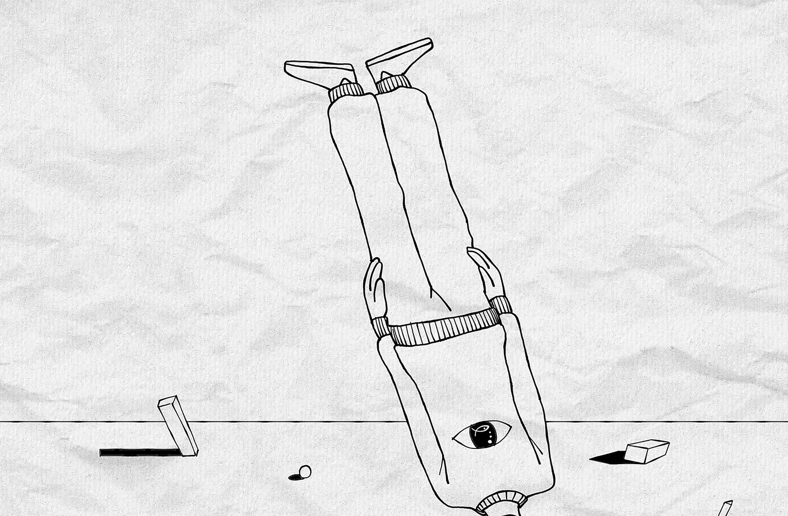

50% of Engineering Managers Fail
September 27, 2025

Something curious happens when engineers become managers. Within 18 months, 50% will be considered failures (Center for Creative Leadership, via Watkins). The pattern is even more pronounced in sales-to-management transitions.
The numbers are consistent globally, across industries, across decades.
Promotion
Benson, Li, and Shue analyzed 38,843 workers promoted to management in 2019. They found something fascinating: the best performers became the worst managers. The correlation was negative -- between -0.09 and -0.13 depending on the measure.
This aligns perfectly with Dr. Laurence Peter's 1969 observation: "In a hierarchy, every employee tends to rise to his level of incompetence." He meant it as satire. The data suggests he was documenting reality.
Consider what this means. Organizations worldwide follow the same promotion pattern. They get the same results. They continue the pattern.
Either every organization is irrational, or they're optimizing for something other than what they claim.
Neurology
Research from UC Berkeley and McMaster University reveals that power diminishes empathetic responses:
- Mirror neuron activity decreases in people primed to feel powerful (Obhi et al., 2014)
- Power reduces the brain's mirroring capacity that helps us understand others (Keltner, 2016)
- Extreme out-groups fail to activate social cognition networks in the brain (Fiske & Harris, 2006)
- Changes manifest behaviorally within weeks of promotion
One engineer described their manager's behavior: "Status updates every 30 min. Even if there was a release yesterday and you have nothing to work on currently, she keeps asking 'What are you working on.'"
From a neurological perspective, this makes perfect sense. When the brain's mirroring capacity diminishes, it requires external confirmation of internal states.
Economics
The global cost of employee disengagement reaches $8.8 trillion annually (Gallup, 2023). That's roughly 9% of global GDP. While not all of this stems from management, Gallup finds managers account for 70% of the variance in engagement scores. For perspective:
- This exceeds the combined GDP of Japan and Germany
- It represents $1,100 per human on Earth
- It's been consistent for at least 30 years
Organizations have access to this data. Business schools teach it. Consultants present it.
(One is reminded of the eternal dialogue between power and truth, where the Jester sees what the Lord cannot -- or will not -- acknowledge. But that's a different story.)
Competition
Lazear and Rosen's 1981 tournament theory provides a theoretical framework. They proposed that promotion tournaments create competition for scarce positions.
While the original paper was theoretical, subsequent empirical research confirms tournament systems increase individual effort but can reduce cooperation.
Organizations trade team efficiency for individual compliance. From a control perspective, this is entirely rational. A competitive workforce is easier to manage than a collaborative one.
Every documented dysfunction serves a function:
- Constant check-ins maintain hierarchy
- Information silos preserve power structures
- Vague feedback reduces legal liability
- Impossible deadlines create plausible deniability
The system produces what it's designed to produce. The 50% failure rate isn't system failure. It's system output.
A Question
If this is all documented, measurable, and consistent, why does it continue?
Three possibilities:
- Organizations are uniformly irrational (though after centuries of commerce, you'd think at least one would have accidentally stumbled onto rationality)
- The research is wrong (all of it, repeatedly, across cultures, and continents -- a conspiracy of competence)
- The system is working as intended (but surely no one would intend... would they?)
I'll explore what "working as intended" might mean, and why an entire civilization might optimize for dysfunction.
For now, consider this: if you're an engineer under a struggling manager, you're not experiencing a bug. You're experiencing a feature. If you're a six-month-old manager finding yourself checking Slack more than coding, that's data. If you're a director noticing your managers seem to speak a different language than their teams, well --
Well, that's precisely the question, isn't it?